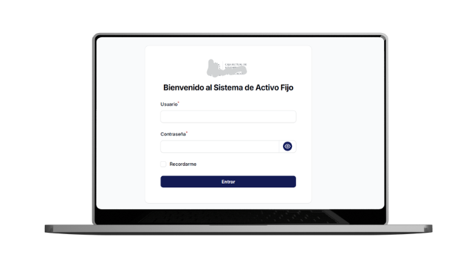
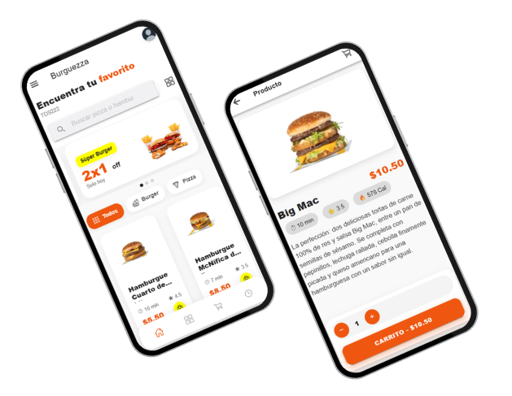
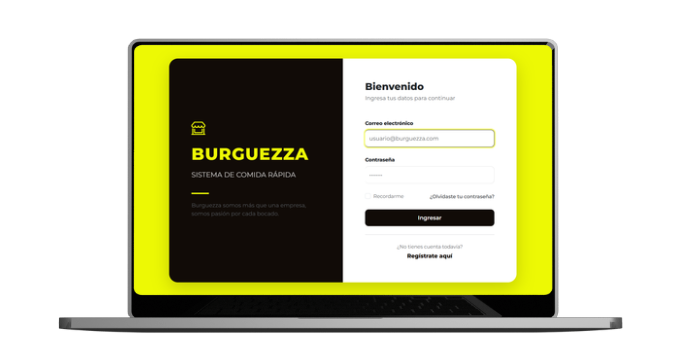

Profesional Junior
Desarrollador de Software Jr enfocado en la creación y optimización de aplicaciones web para el area administrativos. Con solida experiencia con PHP Laravel y gestión de bases de datos, disfruto el trabajo en equipo y la comunicación clara Cuento con experiencia no solo en el desarrollo de nuevas funcionalidades, sino también en el mantenimiento y mejora continua de sistemas existentes. Mi formación técnica se complementa con una capacidad autodidacta y adaptación al cambio, lo que me permite aprender rápidamente nuevas tecnologías y metodologías de desarrollo.
Experiencia Profesional
Programador
Caja Mutual de los Empleados del MinedDesarrollo de un sistema de activo fijo para la administración y control de activos institucionales. El sistema permite registrar bienes, asignarlos a responsables, controlar movimientos y realizar verificaciones físicas. Implementa cálculo automático de depreciación y generación de reportes en PDF para la gestión administrativa.
Técnico de Soporte y Mantenimiento (Horas Sociales)
Instituto Nacional Técnico Industrial (INTI)Realicé mantenimiento preventivo en hardware y software en equipos informaticos, apoyo en la gestión de inventarios de equipos tecnológicos.
Diseñador de Bases de Datos (Pasante)
Empresa CITYLABGestión y documentación de proyectos de bases de datos, modelado ER/UML y ejecución de consultas complejas en SQL Server.
Habilidades Técnicas
Backend
PHP, Laravel, Filament, Python, APIs REST
Frontend
HTML, CSS, JavaScript, Vue.js, Ionic
Data
SQL Server, MySQL
Entorno
Git, GitLab, Fedora Linux, Jira, Postman
Habilidades Blandas
Gestión:
Organización, Trabajo bajo presión, Adaptación.
Interpersonal:
Comunicación clara, Trabajo en equipo.
Cognitiva:
Resolución de problemas, Creatividad, Aprendizaje constante.
Proyectos Destacados

Sistema de Gestión de Activo Fijo
Control de bienes, depreciación y reportes contables personalizados.

App Delivery (Burguezza)
App de pedidos delivery con API integrada y panel administrativo.

Sistema de Restaurante BURGUEZZA
Sistema diseñado para gestionar las operaciones administrativas y el servicio diario de un restaurante.
Educación
Técnico en Ingeniería de Desarrollo de Software
ITCA-FAPEDE (2024-2025)
Bachillerato Técnico Vocacional en Desarrollo de Software
Instituto Nacional Técnico Industrial INTI (2021-2023)
Certificaciones
- Diplomado Mantenimiento Hardware (2020)
- Diplomado en Creacion de Paginas web (2020)
- Fundamentos Básicos de Python (2023)
- CCNA: Introducción a Redes (2023-2024)